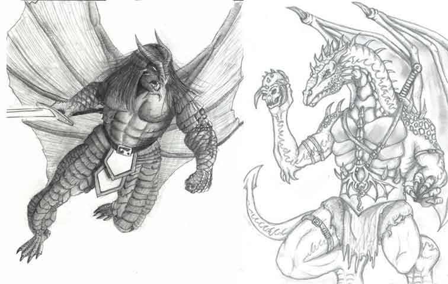
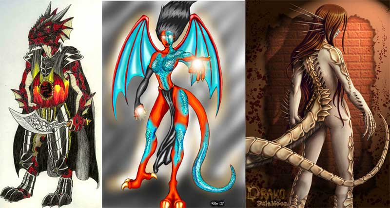

Half-Dragon
Gli Half-Dragon nascono dalla fecondazione di una donna umana con seme di drago. Questa fecondazione può avvenire in due modi differenti. Alcuni draghi possono trasformarsi in uomini ed avere, in questo modo, rapporti con una donna umana. In altri casi la donna è fecondata con seme di drago utilizzando la magia e/o oscuri procedimenti scientifici. In entrambi i casi se la donna resta incinta darà alla luce una spettacolare creatura dalla forma umanoide ma dalle fattezze chiaramente di drago. Il parto sarà particolarmente doloroso e pericoloso, infatti nel 30% dei casi la madre muore durante lo stesso. Una caratteristica di queste creature è che indipendentemente dagli incroci e dalla razza del drago da cui proviene il seme, queste creature assumono una loro autonoma fisionomia e caratteristiche particolari non sono prevedibili prima della gestazione. Essendo creature rare e ricordando i loro progenitori alati sono viste con diffidenza e timore all'interno della società umana di cui spesso vivono ai margini. Gli Half-Dragon sono sterili non potendo dare alle luce propri figli.

Limiti
di classe per la razza:
Fighter 12° livello
Cleric (Azatar, Forze della Natura) 12° livello
Reaver 12° livello
Wizard 12° livello
Possibilità di multi-classe:
Nessuna
Allineamenti consentiti:
Qualsiasi
Categorie di età :
Base Age 14 + 1d4
Childhood
1-14 years
Adolescence
15-20 years
Adulthood
21-99 years
Middle Age* 100-149 years
Old Age**
150-199 years
Venerable Age***
200+ years
Maximum
Age 200
+ 3d10 years
Dimensioni e peso :
Sono alti 172 (le femmine 165) +
costituzione + 1d10 cm. e
pesano 87 (le femmine 80) + costituzione + 1d10 kg.
Punteggi di Abilità :
Bonus:
nessuna modifica
Malus: nessuna modifica
Inoltre i limiti minimi e massimi sono i seguenti :
|
Abilità |
Punteggio Minimo
Razziale |
Punteggio Massimo
Razziale |
|
Forza |
12 |
18 |
|
Intelligenza |
12 |
18 |
|
Saggezza |
12 |
1 |
|
Costituzione |
12 |
18 |
|
Carisma |
12 |
18 |
|
Destrezza |
12 |
18 |
Caratteristiche speciali :
Creatura alata: Gli Half-Dragon oltre a muoversi camminando (fattore movimento 12) sono dotati di possenti ali e possono volare a fattore movimento 12 (manovrabilità B). Non possono però prendere il volo se sono anche leggermente ingombrati. Inoltre la caratteristica del volo non permette loro di utilizzare efficacemente armi da tiro.
Crescita del Drago: Gli Half-Dragon crescono mano mano che acquisiscono esperienza, migliorando attacchi fisici, spessore delle scaglie ed aumentando di dimensioni.
| Livello di esperienza | Dimensioni | Danni degli artigli/morso | Classe Armatura |
| 1° - 3° | Medium (dimensioni normali) |
1d4/1d6 | 5 |
| 4° - 6° | Medium (+5% altezza e +10% peso) |
1d6/1d8 | 4 |
| 7° - 9° | Large (+25% altezza e +50% peso) |
1d8/1d10 | 3 |
| 10° + | Large (+50% altezza e +100% peso) |
1d10/1d12 | 2 |
Dimensioni: Crescendo gli half-dragon aumentano le loro dimensioni per cui raggiunto il settimo livello passano alla categoria large. Si considerano creature Large, quindi ottengono un bonus di +2 punti ferita a dado vita/livello e la loro iniziativa di movimento è pari a +6 (+3 iniziativa di mezzo movimento). Da tale momento in poi, inoltre, possono usare armi a due mani con una sola mano ad eccezione delle polearm e delle armi che richiedono due mani per essere azionate, si pensi ad una balestra pesante.
Attacchi fisici: Sono dotati di forti artigli e di un morso che possono usare come armi che provocano danni da lacerazione e dipendono dalla loro esperienza. Si noti che possono usare l'attacco del morso solo se attaccano anche con i due artigli la stessa creatura. Si tratta di tre attacchi simultanei. L'uso di un solo artiglio può combinarsi anche all'uso di un'arma o di uno scudo. Agli attacchi fisici può essere aggiunto il bonus proveniente dalla forza nei limiti del massimale del dado. Inoltre, questi personaggi possono imparare alcune speciali arti di combattimento:
Divorare l'Avversario (200 punti arma): Quest'arte può essere utilizzata solo dai mezzi draghi quando combattono con i tre attacchi fisici. Se colpiscono in questo modo con entrambi gli artigli il danno del morso sarà il massimo del dado possibile laddove questo colpisca la vittima. Per imparare quest'arte occorre colpire un bersaglio nello stesso round di combattimento con tutti e tre gli attacchi fisici, ottenendo in questo modo un punto combattimento.
Attacco
dall'Alto (300 punti arma): Quest'arte
può essere utilizzata solo dai mezzi draghi quando combattono con gli attacchi fisici.
Se si trovano in volo e si calano su un avversario che sia sul suolo possono
effettuare oltre ai loro tre attacchi fisici anche altre due artigliate con i
loro arti inferiori che provocano il medesimo danno degli artigli. Dopo aver
effettuato tale attacco sono, però, costretti ad atterrare in prossimità (melee)
della creatura che hanno attaccato (si considera atterrato alla fine del round
in corso). Per imparare quest'arte occorre colpire con entrambi gli artigli un bersaglio nello stesso round
di combattimento attaccandolo volando dall'alto (ottenendo in questo modo
un punto combattimento).
Soffio
Potenziato (200 punti arma): Quest'arte
può essere utilizzata solo dai mezzi draghi quando soffiano. Il danno prodotto
dal soffio (prima del tiro salvezza degli avversari) è aumentato del 50% per
difetto. Per imparare quest'arte occorre
effettuare il massimo dei danni possibili con un soffio e si ottiene un punto combattimento.
Ghiandole
del Soffio Maggiorate (300 punti arma): Quest'arte
può essere utilizzata solo dai mezzi draghi dopo che hanno già utilizzato una
volta nella giornata il loro soffio. Costoro possono riutilizzare il loro soffio
nel corso della stessa giornata una seconda volta, ma non prima che siano
trascorsi 10 rounds dal soffio precedente. Inoltre le 24 ore che devono
trascorrere prima di recuperare entrambi i soffi iniziano a calcolarsi dal
momento in cui è stato utilizzato il secondo soffio. Per imparare quest'arte occorre
effettuare un 1 naturale sul tiro dell'iniziativa del soffio e si ottiene
un punto combattimento.
Scaglie
naturali: La pelle di queste
creature è ricoperta da durissime scaglie che gli garantiscono una classe
armatura naturale.
Gli Half-Dragon, però, sono impossibilitati ad utilizzare
qualsiasi altra armatura per la loro particolare conformazione fisica e
per restare liberi nei movimenti.
Poteri del Drago: La natura del
potere è casuale (si tiri 1d10) e non dipende dalla stirpe del drago che ha
fecondato la donna umana.
(1-2) Poteri del Fuoco:
Resistenza al fuoco, la creatura riduce tutti i
danni da fuoco che subisce della metà. Soffio di fuoco,
1 volta al giorno può sputare una sfera di fiamme (iniziativa
+1) entro 10 metri di raggio che provocherà un'esplosione in una sfera di 3
metri di raggio. Tutti coloro si trovino all'interno della sfera (compreso il
drago) subiranno 2d6 danni
da fuoco + 1d6 per ogni 3 livelli (2d6 al 1° e 2° livello, 3d6 dal 3°
al 5° livello, 4d6 al 6° all'8° livello, ecc...) fino ad un massimo di 5d6 al
10° livello. Questi danni sono dimezzabili con un tiro salvezza contro breath
weapon.
(3-4) Poteri del Ghiaccio:
Resistenza al freddo, la creatura riduce tutti i
danni da freddo che subisce della metà. Soffio di freddo,
1 volta al giorno può soffiare un cono di ghiaccio
(iniziativa +1) sui tre avversari frontali che si trovino in melee con lui provocandogli
1d6 danni da freddo + 2 ogni livello di
esperienza, fino ad un massimo di 1d6 + 20 al 10° livello. Questi danni sono
dimezzabili con un tiro salvezza contro breath weapon.
(5-6) Poteri dell'Acido:
Resistenza al acido, la creatura riduce tutti i
danni da acido che subisce della metà.
Soffio di acido, 1 volta al
giorno può sputare un getto d'acido (iniziativa +1) su un unico
bersaglio che si trovi entro 10 metri di distanza provocandogli 1d4 danni
da acido + 1d4 per ogni livello oltre il primo (2d4 al 2° livello, 3d4
al 3° livello, ecc...) fino ad un massimo di 10d4 al 10° livello. Questi danni
sono dimezzabili con un tiro salvezza contro breath weapon.
(10) A scelta del giocatore
Gli Half Dragon devono raggiungere un ammontare di punti esperienza pari al 200% di quelli che dovrebbero normalmente raggiungere per la classe scelta.
